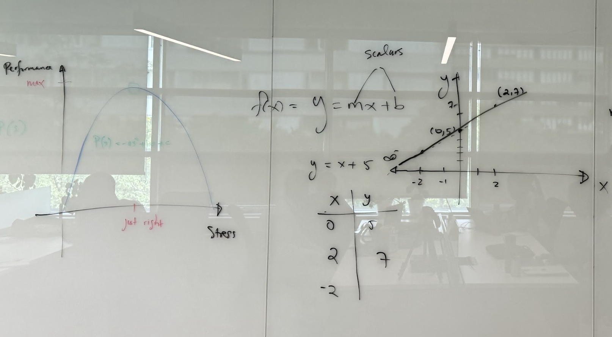
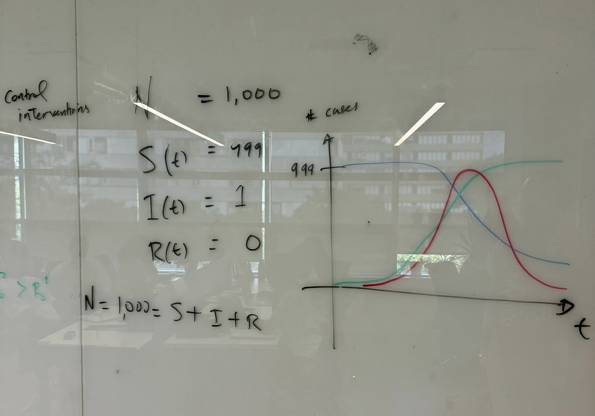
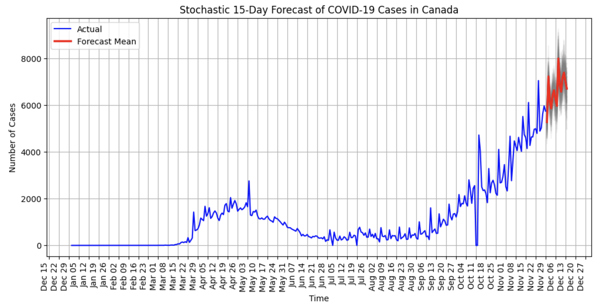

Solving Public Health with Math for AI
Dahdaleh Institute for Global Health Research
August 12-16, 2024
Created by:
Jean-Jacques Rousseau | PhD, MBA, MA
version: 2.2.1
created: 18.06.2024
last update: 11.08.2024
01
AI is not magic. It is built on mathematical models. We can learn the models and use them for our purposes. This workshop will be a counterexample to the view that rigor and accessibility come at the cost of the other.
As a philospher of science, my goal is to become a critical thinker about my topic of interest. As a policymaker, the reason is to become an effective actor in the world. Critical Thinking is about logic and evidence. The logic of AI for public health is mathematics and the evidence is the relevant public health dataset. This ensures that we do public health better.
The main problem areas of machine learning are prediction, classification and clustering. For any one of these, the model has the form: \[y = g(X)\] In this transdisciplinary workshop, participants can expect to develop an intuition for AI models at the level of the function. The difference is the specific function \(g\). For example, a prediction using a linear regression in one dimension is \(g(X) = w_{0} + Xw\). We will build to this point slowly, and move beyond it.
Lastly, this is a workshop about applied mathematics: math that is in the way to solving a problem you care enough about solving to learn the math. A characteristic of math is that an equation, technique or concept will have applications far beyond the context in which they are first encountered. Enjoy seeing your fears recede as you build your math confidence.
02
From personal experience I know that, "machine learning is an obvious and direct motivation to learn mathematics" (Deisenroth et al., xii). What is more, a focus on solving important problems - like whether a disease outbreak will occur, when it might and at what scale - does much to support the dual goals of rigor and accessibility in math education. I hope that you will find that this workshop engages with, as a classic text on calculus promises, "ideas and problems [that are both] difficult and enticing" (Toeplitz, vii).
As a Black-led workshop open to all that was created as a social justice intervention, we must acknowledge the nasty undercurrents of AI - including its roots in violence, oppression and control. We hope that the participants of this workshop will grow into critical and ethical users and developers of AI systems. This why I launched the International Workshop on AI for De-escalation, with 'Enhancing Human Security, Equality & Dignity as the theme this year. I hope this will continue the conversation about de-escalation by design instead of being an afterthought when automated systems misfire.
03
The following topics will be explored, encoding everything in Python:
Input-Output
Analytic versus Statistical Predictions
Optimization and Statistics
Models as Functions
Data as Polynomials and Matrices
AI for Improved Population-level Health Outcomes
04
We will post the next day's materials every evening, with links to help you prepare.
DAY 1

10:00am to 12:15pm
Welcome & Land Acknowledgement
Team Building Exercise
Construct your name story.
Getting Ready to Learn
Exploring the relationship between performance and stress.
Break
12:15pm to 1:00pm
Lunch
We invite you to eat in community. You may bring lunch from home or buy it at a restaurant across the street and bring it back to eat in the kitchen together.
1:00pm to 4:00pm
Introduction to Python in Google Colab
Data types, control structures, custom functions, importing modules & packages.
Break
Math Foundations I
Funcitons, lines and curves, math notation.
Concluding Remarks
Summary of the day and preview of what's to come.
DAY 2

10:00am to 12:15pm
Summary of Yesterday.
The Public Health Policy Question
A visit from the "Health Public Minister" (role play).
The SIR Model
Shape of an Outbreak, \(R_{0} \), flattening the curve, herd immunity, Mathematical models, system dynamics, model forecast based on number of cases per day to date, control interventions.
Break
The Input-Output Paradigm
\(X\) as input, \(g(X)\) as the model, and \(y_{i}\) as the output.
12:15pm to 1:00pm
Lunch
We invite you to eat in community. You may bring lunch from home or buy it at a restaurant across the street and bring it back to eat in the kitchen together.
1:00pm to 4:00pm
Math Foundations II
Curve fitting, sets, dimensions, vectors, matrices, notation, datasets as functions and polynomials, differential and integral calculus as flow and stock, more notation.
Break
Python Basics II
Importing libraries, floats, dataframes.
Concluding Remarks
Summary of the day and preview of what's to come.
DAY 3

10:00am to 12:15pm
Summary of Yesterday.
Python Basics III
Lists and custom functions.
Break
Introduction to the SIR Model in Python
Disease outbreak modeling in Python
12:15pm to 1:00pm
Lunch
We invite you to eat in community. You may bring lunch from home or buy it at a restaurant across the street and bring it back to eat in the kitchen together.
1:00pm to 4:00pm
Use AI to Code
Break
Visit by Dr. James Orbinski
Concluding Remarks
Summary of the day and preview of what's to come.
DAY 4

10:00am to 12:15pm
Summary of Yesterday.
Python Basics VI
Flow controls, working with dataframes, uploading datasets into Colab, exploratory data analysis (EDA).
Break
Disease Outbreak Prediction Model
12:15pm to 1:00pm
Lunch
We invite you to eat in community. You may bring lunch from home or buy it at a restaurant across the street and bring it back to eat in the kitchen together.
1:00pm to 4:00pm
Disease Outbreak Prediction Model
Break
Model Training
Weights and biases.
Concluding Remarks
Summary of the day and preview of what's to come.
DAY 5

10:00am to 12:15pm
Summary of Yesterday.
Finalizing the Disease Ourbreak Prediction Model
1:00pm to 3:00pm
Presentations
Award Ceremony & Social Mixer
05
Jean-Jacques Rousseau Workshop Creator & Lead Instructor
Philosopher of science with advanced public policy experience. He is Adjunct Faculty Fellow at Dahdaleh, Fellow at CERLAC, and teaches Organizational Studies at the Schulich School of Business.
Jean-Jacques holds a PhD from the University of Toronto and completed a postdoctoral fellowship in Explainability & Trust in AI Systems at the Lassonde School of Engineering. He also completed intensives in Philosophy of Physics at the University of Geneva, a certificate in teaching modern physics at the Perimeter Institute for Theoretical Physics, and a graduate-level introduction to Machine Learning at the Vector Institute for AI.
Rachel Luke Workshop Co-Creator & Curriculum Advisor
Instructional Coordinator for African, Black and Afro-Caribbean Student Success at the Peel District School Board.
Prior to this role, Rachel taught English, Dramatic Arts, English as a Second Language, Black Canadian History and was a Teacher Librarian at Glenforest Secondary School for 20 years.
In 2021, she was a recipient of the Prime Minister’s National Award for Teaching Excellence and in 2020 she was awarded a Regional Certificate of Achievement for the Prime Minister’s Awards for Teaching Excellence.
Vanessa Ferguson Student Mentor
A Global Health and Humanitarian Graduate Student Scholar at the Dahdaleh Institute at York University, and PhD Candidate in the Health Policy and Equity program in the Faculty of Health at York University.
Her research explores the intersections between artificial intelligence (AI), equity and justice for Black communities locally and globally, specifically as it concerns sickle cell disease (SCD), a multisystem genetic blood disorder. Vanessa is interested in exploring how race and racism function within healthcare and how to mitigate its implications, especially in the age of AI.
Jan Makino Curriculum Advisor
With over 20 years of experience teaching with the Peel Board of Education, Jan currently works at Glenforest Secondary School where she is the Head of the Mathematics Department. She has taught both SL Mathematics and SL Computer Science in the IB program. Jan also taught all of the Ontario math courses from destreamed grade 9 to grade 12 Calculus and Vectors. When not teaching, she loves to travel to new places to learn about the history and culture of different communities around the world. Jan has visited several countries, including Portugal, Spain, Australia, Japan, Malaysia, Hong Kong, Cambodia, Thailand, Nepal, Vietnam, Korea, Panama and Barbados, and is always looking forward to her next adventure!
James Orbinski Faculty Sponsor
Professor and the inaugural Director of York University’s Dahdaleh Institute for Global Health Research. He aims to make the institute a leader and catalyst in addressing global health issues, reflecting York University’s commitment to equity and trans-disciplinary research.
He is an Officer of the Order of Canada, and has received the Meritorious Service Cross for his leadership in providing direct medical relief in Kigali during the 1994 genocide in Rwanda. An avid canoeist, Dr. Orbinski lives in Guelph, Ontario, with his family.
Michael Jenkin Faculty Sponsor
Professor of Computer Science and Engineering and a member of the Centre for Vision Research at York University. Working in the fields of visually guided autonomous robots and virtual reality, he has published over 150 research papers, including co-authoring Computational Principles of Mobile Robotics with Gregory Dudek and a series of co-edited books on human and machine vision with Laurence Harris.
Professor Jenkin's current research interests include: work on sensing strategies for AQUA, an amphibious autonomous robot, and the understanding of the perception of self-motion and orientation in unusual environments including microgravity.
Tameka Samuels-Jones Faculty Sponsor
Co-Director of the Centre for Research on Latin America and the Caribbean (CERLAC) and Assistant Professor. She teaches Corporate Social Responsibility & Sustainability and Justice, Governance & Accountability in the Global South.
Her scholarly work includes publications on environmental crime, Indigenous law in Latin America and the Caribbean and regulatory law. Specifically, she conducts research on the role of legal pluralism on environmental governance among legally autonomous groups.
She is dedicated to research which emphasizes inclusivity in the development of environmental policies and laws particularly in countries in the Global South.
06
The organizers of this inaugural workshop are grateful to the participants, advisors and the community members who encouraged us to follow our passions for STEM in the service of social justice.
We are also grateful to Prof. Carl James who challenges us to contribute to "Securing [brighter?] Black Futures".
07
Books
Acquaviva, Viviana. 2023. Machine Learning for Physics and Astronomy. Princeton University Press.
Bernard, Etienne. 2021. Introduction to Machine Learning. Wolfram Media.
Deisenroth, Marc P., A A. Faisal, and Cheng S. Ong. 2021. Mathematics for Machine Learning. Cambridge University Press.
Grigorev, Alexey. 2021. Machine Learning Bootcamp: Build a Portfolio of Real-life Projects. Manning.
Gutman, Alex J., and Jordan Goldmeier. 2021. Becoming a Data Head: How to Think, Speak, and Understand Data Science, Statistics, and Machine Learning. Wiley.
Nelson, Hala. 2023. The Essential Math for AI: Next Level Mathematics for Efficient and Success AI Systems. O'Reilly.
Serrano, Luis G. 2021. Grokking Machine Learning. Manning.
Tall, David. 2013. How Humans Learn to Think Mathematically: Exploring the Three Worlds of Mathematics. Cambridge University Press.
Wilmott, Paul. 2023. The Mathematics of Artificial Intelligence for High Schoolers. Panda Ohana Publishing.
Wilmott, Paul. 2020. Machine Learning: An Applied Mathematics Introduction. Panda Ohana Publishing.